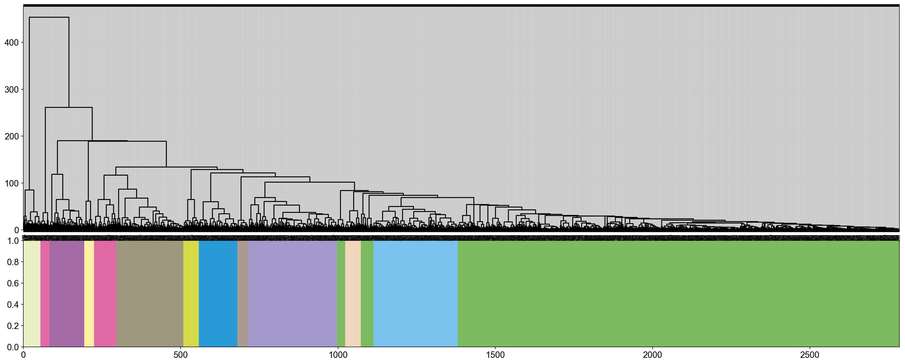

Bulk tutorial: WGCNA (Weighted gene co-expression network analysis) analysis
Weighted gene co-expression network analysis (WGCNA) is a systems biology approach to characterize gene association patterns between different samples and can be used to identify highly synergistic gene sets and identify candidate biomarker genes or therapeutic targets based on the endogeneity of the gene sets and the association between the gene sets and the phenotype.
Here, you will be briefly guided through the basics of how to use Pyomic to perform wgcna anlysis. Once you are set
[ ]:
# update to the latest version, if not done yet.
!pip install Pyomic --upgrade --quiet
[1]:
import Pyomic
%matplotlib inline
import scanpy as sc
sc.logging.print_header()
sc.settings.set_figure_params(dpi=80, facecolor='white')
/Users/fernandozeng/miniforge3/envs/django/lib/python3.8/site-packages/tqdm/auto.py:22: TqdmWarning: IProgress not found. Please update jupyter and ipywidgets. See https://ipywidgets.readthedocs.io/en/stable/user_install.html
from .autonotebook import tqdm as notebook_tqdm
scanpy==1.9.1 anndata==0.8.0 umap==0.5.3 numpy==1.22.4 scipy==1.9.0 pandas==1.4.3 scikit-learn==1.1.2 statsmodels==0.13.2 python-igraph==0.9.11 pynndescent==0.5.7
We define the color palette to visualize the module of wgcna
[2]:
from matplotlib.colors import LinearSegmentedColormap
sc_color=['#7CBB5F','#368650','#A499CC','#5E4D9A','#5E4D9A', '#78C2ED','#866017', '#9F987F','#E0DFED',
'#EF7B77', '#279AD7','#F0EEF0', '#1F577B', '#A56BA7', '#E0A7C8', '#E069A6', '#941456', '#FCBC10',
'#EAEFC5', '#01A0A7', '#75C8CC', '#F0D7BC', '#D5B26C', '#D5DA48', '#B6B812', '#9DC3C3', '#A89C92', '#FEE00C', '#FEF2A1']
c = LinearSegmentedColormap.from_list('Custom', sc_color, len(sc_color))
Load the data
The analysis is based on the in-built WGCNA tutorial data.
[3]:
import pandas as pd
data=pd.read_csv('sample/LiverFemale3600.csv')
data.dropna(inplace=True)
data.set_index(data.columns[0],inplace=True)
data.head()
[3]:
| F2_2 | F2_3 | F2_14 | F2_15 | F2_19 | F2_20 | F2_23 | F2_24 | F2_26 | F2_37 | ... | F2_324 | F2_325 | F2_326 | F2_327 | F2_328 | F2_329 | F2_330 | F2_332 | F2_355 | F2_357 | |
|---|---|---|---|---|---|---|---|---|---|---|---|---|---|---|---|---|---|---|---|---|---|
| substanceBXH | |||||||||||||||||||||
| MMT00000044 | -0.0181 | 0.0642 | 0.000064 | -0.05800 | 0.04830 | -0.151974 | -0.00129 | -0.23600 | -0.0307 | -0.02610 | ... | 0.047700 | -0.0488 | 0.0168 | -0.0309 | 0.02740 | -0.0310 | 0.0660 | -0.0199 | -0.0146 | 0.065000 |
| MMT00000046 | -0.0773 | -0.0297 | 0.112000 | -0.05890 | 0.04430 | -0.093800 | 0.09340 | 0.02690 | -0.1330 | 0.07570 | ... | -0.049200 | -0.0350 | -0.0738 | -0.1730 | -0.07380 | -0.2010 | -0.0820 | -0.0939 | 0.0192 | -0.049900 |
| MMT00000051 | -0.0226 | 0.0617 | -0.129000 | 0.08710 | -0.11500 | -0.065026 | 0.00249 | -0.10200 | 0.1420 | -0.10200 | ... | 0.000612 | 0.1210 | 0.0996 | 0.1090 | 0.02730 | 0.1200 | -0.0629 | -0.0395 | 0.1090 | 0.000253 |
| MMT00000080 | -0.0487 | 0.0582 | -0.048300 | -0.03710 | 0.02510 | 0.085043 | 0.04450 | 0.00167 | -0.0680 | 0.00567 | ... | 0.113000 | -0.0859 | -0.1340 | 0.0639 | 0.00731 | 0.1240 | -0.0212 | 0.0870 | 0.0512 | 0.024300 |
| MMT00000102 | 0.1760 | -0.1890 | -0.065000 | -0.00846 | -0.00574 | -0.018072 | -0.12500 | -0.06820 | 0.1250 | 0.00998 | ... | -0.080000 | -0.1200 | 0.1230 | 0.1870 | 0.05410 | 0.0699 | 0.0708 | 0.1450 | -0.0399 | 0.037500 |
5 rows × 135 columns
Correlation matrix calculate
[4]:
gene_wgcna=Pyomic.bulk.pywgcna(data,save_path='result')
gene_wgcna.calculate_correlation_direct()
gene_wgcna.calculate_correlation_indirect()
gene_wgcna.calculate_soft_threshold()
gene_wgcna.calculate_corr_matrix()
...correlation coefficient matrix is being calculated
...direction correlation have been saved
...indirect correlation matrix is being calculated
...indirection correlation have been saved
...soft_threshold is being calculated
...appropriate soft_thresholds: 6


Select the gene-module
[5]:
gene_wgcna.calculate_distance()
gene_wgcna.calculate_geneTree()
gene_wgcna.calculate_dynamicMods()
module=gene_wgcna.calculate_gene_module(cmap=c)
...distance have being calculated
...geneTree have being calculated
...dynamicMods have being calculated
..cutHeight not given, setting it to 448.9691031625519 ===> 99% of the (truncated) height range in dendro.
..done.
...total: 12

Calculate the correlation with character
[6]:
#Correlation analysis between gene modules and traits
cha=pd.read_csv('sample/character.csv')
cha.set_index(cha.columns[0],inplace=True)
comat=gene_wgcna.Analysis_cocharacter(cha)
...PCA analysis have being done
...co-analysis have being done

[ ]: